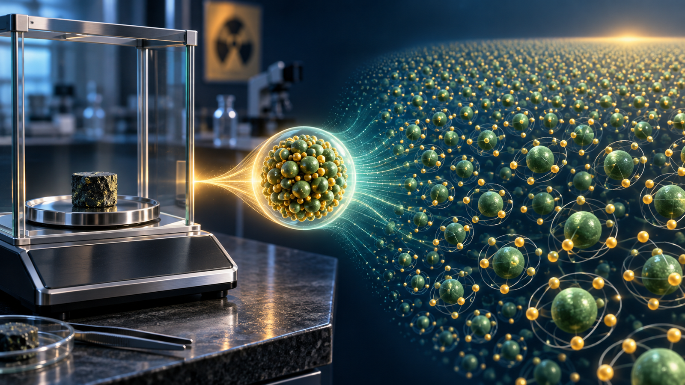
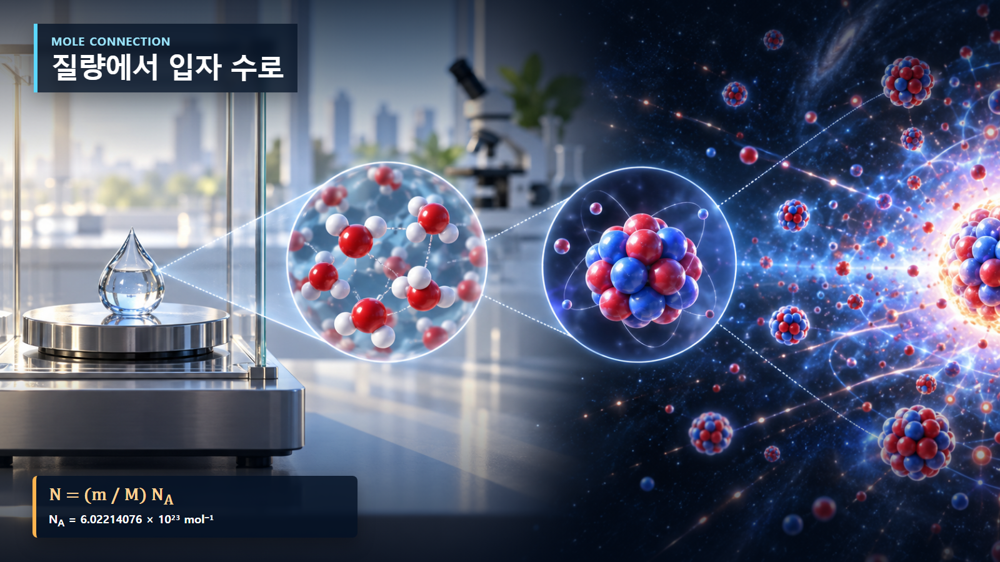
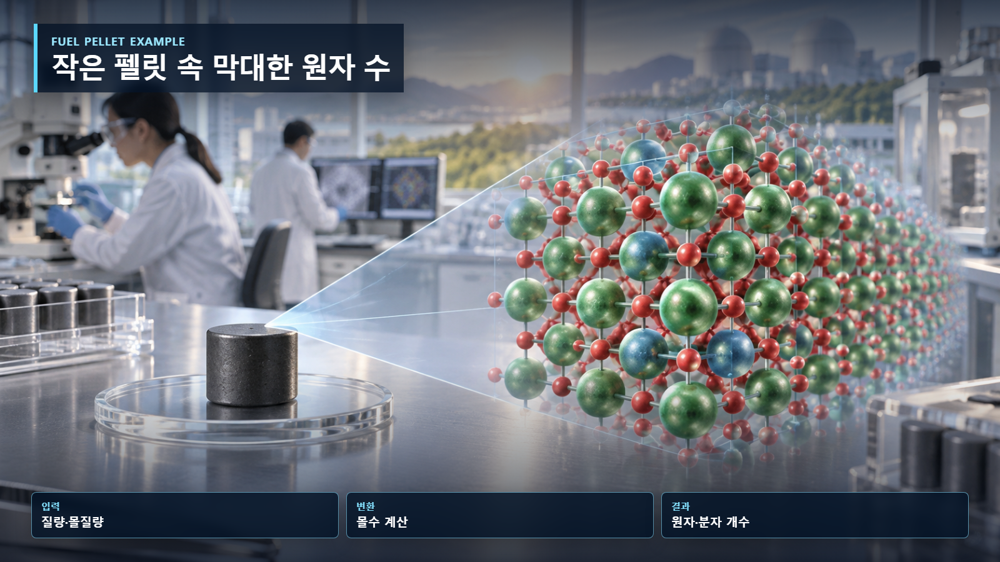

핵물리 기초 · 007
아보가드로수와 원자 개수
거시적 질량을 미시적 입자 수로 바꾸는 연결고리

1몰에는 정확히 6.02214076×10²³개의 구성 입자가 있습니다. 몰질량을 이용하면 손에 잡히는 시료의 질량을 원자 개수로 바꿀 수 있습니다.
몰과 입자 수의 단계별 연결
아보가드로상수 N_A=6.02214076×10²³ mol⁻¹는 1몰에 든 입자 수입니다. 물 18.0 g의 몰질량을 18.0 g/mol로 보면 몰수는 18.0÷18.0=1.00 mol, 분자 수는 1.00×N_A=6.022×10²³개입니다. 물 한 분자에는 수소 원자 두 개가 있어 수소 원자 수는 두 배입니다.

| 단계 | 식 | 단위 확인 |
|---|---|---|
| 몰수 | n=m/M | g ÷ g·mol⁻¹=mol |
| 입자 수 | N=nN_A | mol × mol⁻¹=개수 |
| 특정 원자 | 화학식 배수 | 분자당 원자 개수 |
우라늄 시료의 두 번째 계산
순수 우라늄-235가 235 g이면 약 1 mol이고 원자 수는 약 6.022×10²³개입니다. 1 g이라면 1/235 mol이므로 약 2.56×10²¹개입니다. 질량이 작아도 원자 수는 막대하므로 원자로 출력은 집단의 반응률로 계산합니다.

원자수밀도와 반응률의 적용
연료나 감속재의 질량밀도와 몰질량을 알면 단위부피 속 원자 수를 구할 수 있습니다. 이 원자수밀도에 중성자속과 미시적 단면적을 곱하면 단위부피당 반응률이 됩니다. 아보가드로상수는 실험실의 g과 원자로 해석의 원자 개수를 잇습니다.
몰수와 분자수의 혼동
1몰은 질량이 아니라 입자 개수의 묶음입니다. 물 1몰과 우라늄 1몰은 입자 수는 같지만 질량이 다릅니다. 물 1몰의 분자 수와 전체 원자 수도 같지 않습니다. 어떤 입자를 세는지 먼저 밝혀야 합니다.
이산화우라늄 연료의 입자 계산
UO₂의 몰질량은 사용하는 우라늄 동위원소 조성에 따라 달라집니다. U-238만 단순 가정하면 약 238+2×16=270 g/mol입니다. UO₂ 270 g에는 약 1 mol의 UO₂ 화학식 단위, 즉 6.022×10²³개의 우라늄 원자와 그 두 배인 산소 원자가 있습니다. 실제 연료는 농축 우라늄과 산소 동위원소의 혼합물이므로 정확한 몰질량을 조성으로 다시 계산합니다.
아보가드로상수는 정확한 정의값이지만 측정한 질량, 순도, 밀도와 동위원소 조성에는 불확실성이 있습니다. 따라서 계산 자릿수는 입력자료의 정밀도를 넘어 과도하게 늘리지 않으며 연료 재고에서는 제조 허용오차와 연소에 따른 조성변화도 반영합니다.
구성 입자의 명시
구성 입자는 대상에 따라 원자, 분자, 이온 또는 화학식 단위를 뜻합니다. NaCl 1몰은 결정 속 화학식 단위 1몰이라고 하는 편이 정확합니다. 핵연료 계산에서도 UO₂ 화학식 단위와 우라늄 원자 수를 구분합니다.
원자력공학에서의 활용
연료에서 핵분열 가능한 원자 수를 구할 때에는 전체 우라늄 질량에 농축도와 동위원소별 몰질량을 적용합니다. 물질의 원자 수를 부피로 나누면 원자수밀도가 되고, 여기에 중성자속과 미시적 단면적을 곱하면 반응률을 계산할 수 있습니다. 따라서 아보가드로상수는 연료 제조자료와 노심물리 계산을 직접 연결합니다.
해석에서 주의할 점
1몰은 고정된 질량이 아니라 고정된 입자 수입니다. 물 1몰과 우라늄 1몰은 입자 수는 같지만 질량은 크게 다릅니다. UO₂ 1몰에는 우라늄 원자 1몰과 산소 원자 2몰이 들어 있으므로 화학식의 아래첨자를 빠뜨리면 원자 재고가 틀립니다.
연료봉 재고로 확장하는 계산
연료 시료에 우라늄이 1,000 g 들어 있고 U-235 질량분율이 4.95%라면 U-235 질량은 49.5 g입니다. 이를 235 g/mol로 나누고 아보가드로상수를 곱하면 약 1.27×10²³개의 U-235 원자를 얻습니다. 실제 연료에서는 U-234와 U-238도 각각 계산하며, 제조자료가 질량분율인지 원자분율인지 먼저 확인해야 합니다. 이러한 구분 없이 농축도 숫자만 적용하면 초기 핵종 재고와 반응률이 함께 어긋납니다.
핵심 정리
N=(m/M)N_A는 질량을 입자 수로 바꾸는 기본식입니다. 질량, 몰질량, 화학식과 동위원소 조성을 일관된 단위로 사용하면 시료 원자 수와 반응률 계산의 출발값을 얻습니다.